Import Simatic PC-Station into the System Computer
- On the STEP7 engineering computer, select SIMATIC PC-Station and double-click Configuration.
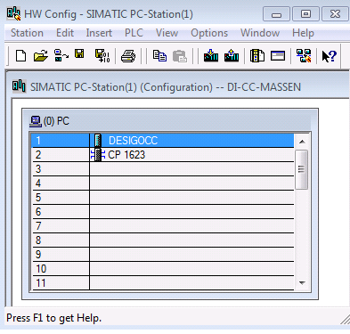
- The Properties window displays.
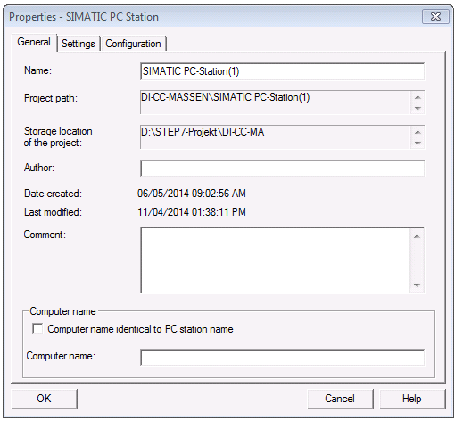
- In the Configuration tab:
a. Under Compatibility, select the check box.
b. Next to the Storage location of the configuration file field, click Browse and select a destination.
c. Click OK.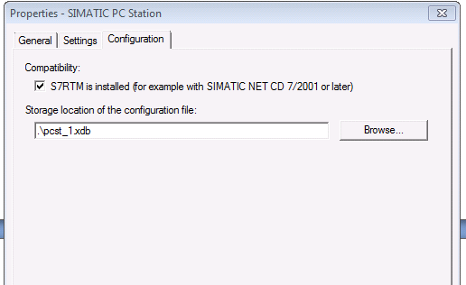
- In the Station menu, click Save and compile to update the configuration file.
- Copy the configuration file to the Desigo CC computer.
- On the Desigo CC computer:
a. Click the Windows Start button.
b. In the Search field, enter Station. - The Station Configuration Editor displays.
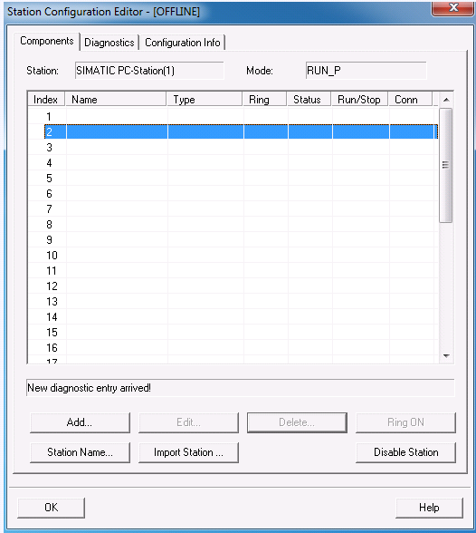
- To import the fault tolerant connections, do one of the following:
- Click Import Station and select the configuration file.
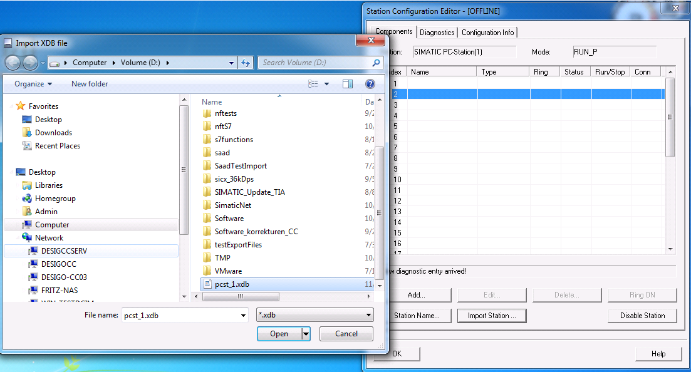
- The HW Config and the fault-tolerant connections are imported into the PC station.
NOTE: The HW-Config and the fault-tolerant connections can also be loaded on the SIMATIC PC-Station without the configuration file. But it is recommended to import the configuration file the first time. However, the HW-Config and the fault-tolerant connection can also be loaded with the STEP7 Manager in SIMATIC PC-Station (see load HW-Config below).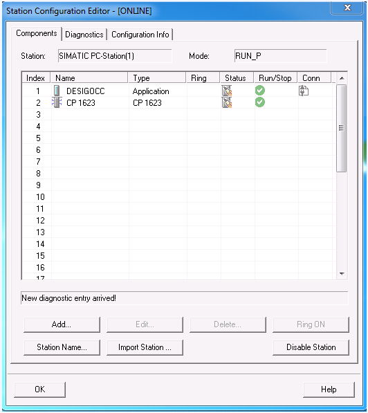
- Load HW-Config and the fault-tolerant connection in the Desigo CC computer. (Load HW-Config + connection and Import the configuration file (see Import Station above) is the same thing. Usually, for first configuration, use the import procedure described above, then the loading procedure).
a. On the STEP7 engineering computer open NetPro.
b. Select the application Desigo CC and load the station by pressing CTRL+L.
c. Click OK to load the fault-tolerant connection and HW-Config on the Desigo CC computer.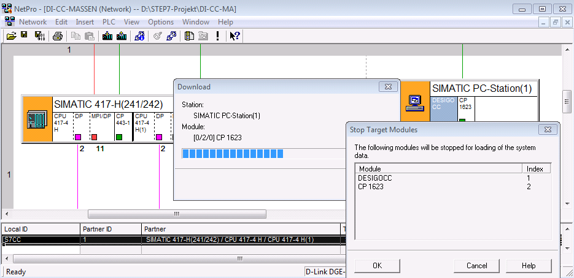
- Configure the PG / PC interface in Desigo CC. In the Access Point of the Application drop-down list, select CP1623.RFC1006 if the fault-tolerant connection is configured via IP address (CP443-1EX30, CP443-1GX30, CPU400H-PN).
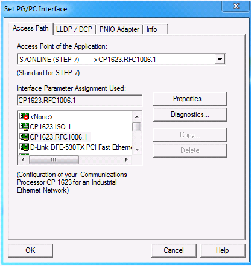
- In the Access Point of the Application drop-down list, select CP1623.ISO if the fault-tolerant connection runs via MAC address (for example, CP443-1EX11).
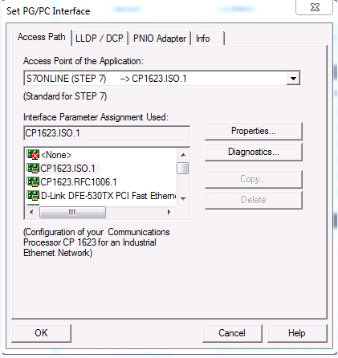
- Configure the settings in the Desigo CC management station.
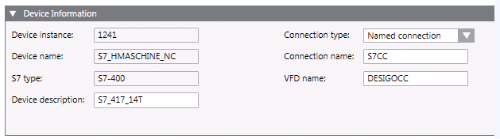
- Click the Windows Start button.
- In the Search field, enter S7.
NOTE: The state of the fault-tolerant connection can be checked on the SIMATIC PC-Station under S7 Connection Diagnostics.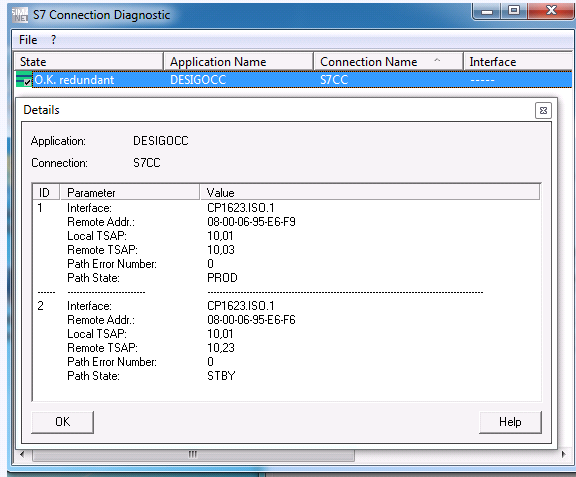